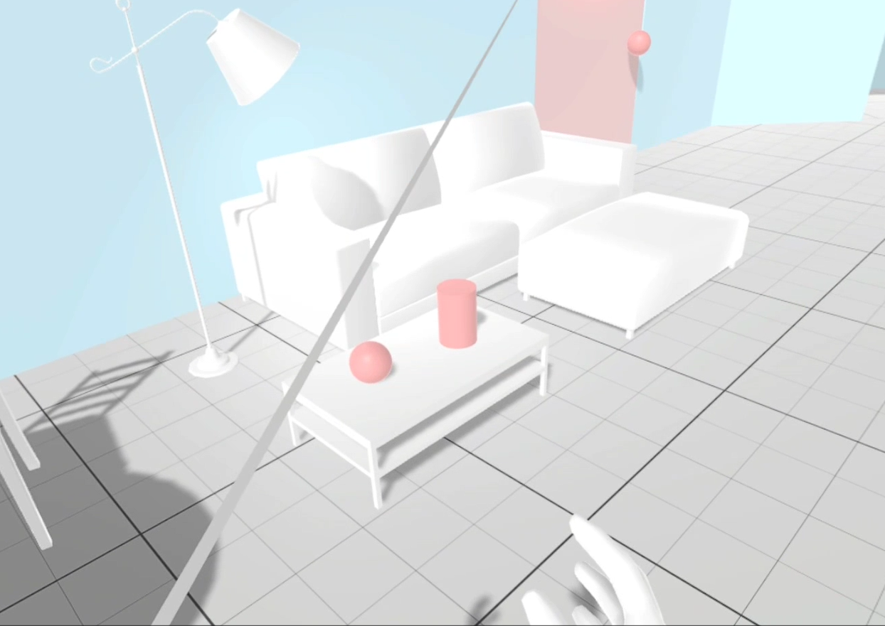

📂 Superkraft‐Virtuelle Welt
❗Hinweis zum Projekt: Dieses Projekt war Teil einer Forschungsinitiative. Als Forschungsstudent an der Universität Siegen entwickelte ich das Superkraft-Feature "Schrumpfen und Wachsen". Aufgrund von Urheberrechtsbeschränkungen durch die Universität Siegen kann ich den Code nicht zur Verfügung stellen. Vielen Dank für Ihr Verständnis.
Als Mitwirkender an einer Forschungsstudie, die die Anwendungen von
Virtual Reality (VR) über konventionelle Nutzungen hinaus erforschte, entwickelte ich eine immersive
VR-Anwendung, die darauf abzielte, den Benutzern ein einzigartiges Superkraft-Erlebnis zu bieten.
Dieses Projekt wurde entworfen, um das Benutzerverhalten in Bezug auf erweiterte Funktionen zu
analysieren, insbesondere wie Benutzer mit verbesserten Fähigkeiten in einer virtuellen Umgebung
interagieren und sich an diese anpassen. Ich war verantwortlich für die Entwicklung der Wachsen- und
Schrumpffunktionen, die es den Benutzern ermöglichten, ihre Größe in der VR-Welt zu manipulieren.
Unter Verwendung von C# entwarf ich die Logik für diese Superkräfte, integrierte
gestenbasierte Auslöseereignisse, die es den Benutzern ermöglichten, nahtlos zu wachsen oder zu
schrumpfen, entsprechend ihrer Bewegungen. Diese Funktionalität war entscheidend, um den Benutzern
die Vollendung verschiedener Aufgaben zu ermöglichen und Einblicke zu geben, wie verbesserte
Fähigkeiten Benutzerstrategien und Aufgabenleistung beeinflussen könnten. Diese Anwendung wurde auf
dem HTC Vive Headset getestet und gewährleistete eine robuste Benutzererfahrung.

VR-Umgebungseinrichtung und Aufgabendesign
Die erste Phase des Benutzererlebnisses umfasste einen Vorbereitungsraum, den ich mit dem Probuilder-Plugin von Unity entwickelte. Diese Umgebung diente dazu, die Benutzer mit ihren Superkräften und der gesamten VR-Einstellung vertraut zu machen. Mehrere Aufgabenräume wurden entworfen, jeder auf unterschiedliche Herausforderungsgrade zugeschnitten, die von den Benutzern verlangten, ihre Kräfte effektiv einzusetzen, um spezifische Ziele zu erreichen. Die Szenen wurden mit Haushaltsgegenständen und anderen Elementen angereichert, die in Blender sorgfältig konstruiert wurden, um Realismus und Immersion zu verstärken. 
Interaktive Aufgabenumsetzung
Die Kernaufgabe für die Benutzer bestand darin, Schaltknöpfe in verschiedenen Räumen zu lokalisieren und zu aktivieren, ein Prozess, der darauf ausgelegt war, ihre Fähigkeit, ihre Superkräfte effektiv anzuwenden, zu testen. Nach erfolgreicher Beendigung dieser Aufgabe schlossen die Benutzer den Test ab und demonstrierten ihre Fähigkeit, die VR-Umgebung zu manipulieren. Alle Interaktionen in diesem Projekt wurden durch das XR Interaction (XRI) Toolkit erleichtert, das eine reaktionsschnelle und intuitive Benutzererfahrung sicherstellte. Dieses Toolkit war entscheidend für die Entwicklung eines robusten Interaktionssystems, das die komplexen Dynamiken der VR-Superkraftmanipulation unterstützte.
Insgesamt zeigte dieses Projekt nicht nur meine technischen Fähigkeiten in der VR-Entwicklung, bei der Werkzeuge wie C#, Probuilder und Blender zum Einsatz kamen, sondern auch meine Fähigkeit, komplexe Interaktionssysteme mit dem XR Interaction Toolkit zu implementieren. Es unterstrich meine Kapazität, innerhalb des Bereichs der virtuellen Realität zu innovieren, indem es ansprechende und herausfordernde Umgebungen schuf, die die Grenzen traditioneller VR-Anwendungen erweitern.